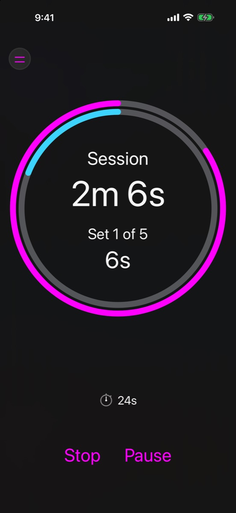
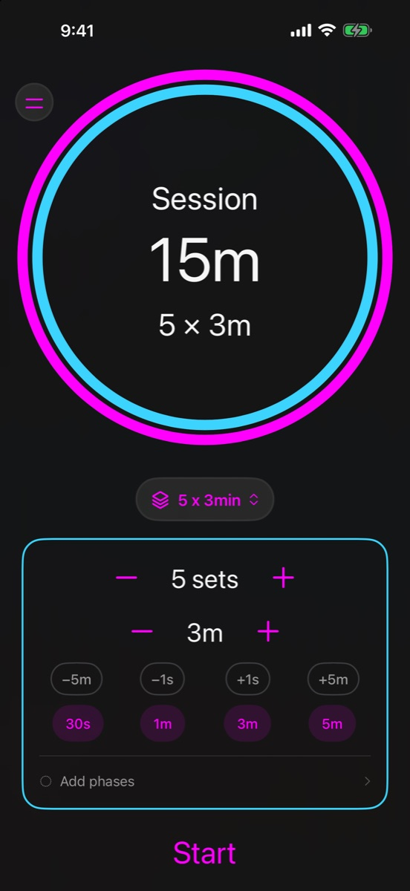
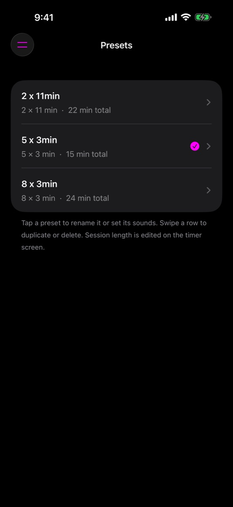
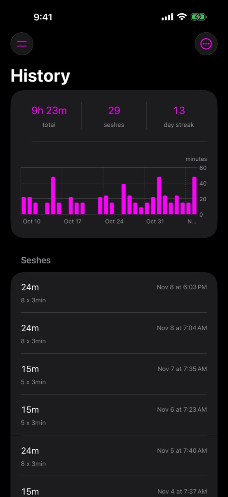

Sesh Time
A calm timer for any practice.
Meditationqigongtai chibreathworkstretching
Set how many rounds, how long each one lasts, and whether to ease in or wind down. Then press Start and let a bowl tell you when each round ends. No account, no ads, just you and the session.
iPhone and iPad · iOS 17 or later · No tracking of any kind




Two rings, one glance
The outer ring is the whole session. The inner ring is the set, break or phase you're in right now. Each one empties as its time runs down, so you can tell how far along you are with half-open eyes, without reading a number.
When a round ends, the inner ring fills again and a bowl rings. With a single round and no phases, there's just the one ring.
- Session left
- This round left
- Time already sat
What it does
Sesh Time keeps the structure of a session so you don't have to. Shape it once, and every time after it's one tap.
Shape any session
Choose how many sets and how long each lasts. Nudge by a minute or a second, or tap a quick-set duration you've chosen.
Warmup, breaks and cooldown
Add a warmup to settle in, a rest between sets, and a cooldown or dedication at the end. Each one is optional and timed on its own.
Bowls and bells
Eleven singing bowls, bells and tingsha, all made in-house. Pick one for the start, one for each new round and one for the end, and set how loud they ring.
Keeps true time
Lock your phone or switch apps and the session keeps counting by the clock. If it ends while you're away, the closing bell still rings, as long as notifications are allowed. It can also keep the screen from dimming.
Presets for every practice
Save a session as a preset and load it from the timer in one tap. Rename or duplicate them, and give each preset its own sounds.
Your colors
Choose a palette such as Sunset, Forest or Ocean, or pick your own two colors. Light, dark or automatic, on iPhone and iPad, upright or sideways.
Watch your practice add up
Every session you sit goes into History: your total time, how many seshes, and a chart of the last 30 days. Short sits count too.
- Total time
- Seshes
- 30-day chart
- Day streak
- Apple Health
A streak if you want one. Some people like the nudge, and others find it adds pressure a practice doesn't need, so the streak turns off with one tap. Completed sessions can also be saved to Apple Health as mindful minutes, if you choose.
Private by design
A timer has no business knowing who you are. Sesh Time doesn't ask.
- No account. There's nothing to sign up for and nothing to sign in to.
- No trackers. No analytics, no advertising and no third-party frameworks of any kind.
- Stays on your device. Your presets, settings and history never leave it.
- Apple Health only if you ask. Sesh Time writes mindful minutes for sessions you finish, and never reads anything back.
Your practice, your timing.
Questions or ideas? Get help or send feedback.